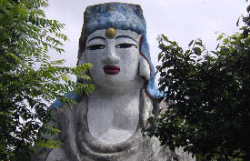 凄い！凄すぎる！
 弘法大師である。
弘法大師である。
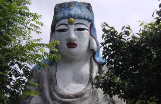 凄い！凄すぎる！
その瀬川瑛子似の独自の造型センス、独自の色彩感覚に痺れる。 さらに境内に入る。建物の上にはこんなお方がおわす。
もう夢ではないかと思う程のイカしたコンクリ仏である。 これだけではない。境内を見渡すとあるわあるわ。オリジナリティーあふれまくる素晴らしい仏像の群れ。
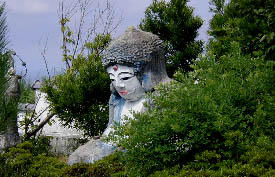 特に目を惹いたのがこちら。何とも言い難い魅力がある。
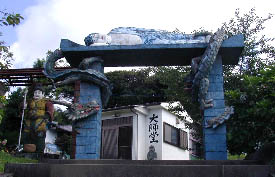 階段の上には凄い門が。巻き付いた龍と寝釈迦像。
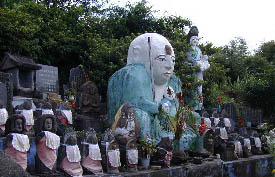 で、横を見ればこんな感じ。
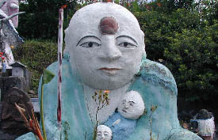 このお方の抱いている子供のデフォルメ具合と云ったら、もう。
階段を登り門をくぐると最初に目についた瀬川瑛子似の観音様の裏手になる。 そこにも様々なパラダイス系の仏像が点在している。 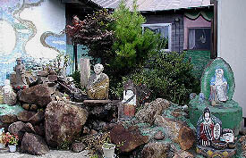 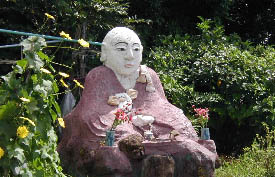 この時点で完全にメロメロになっている私。 仏像だけでなく壁面や天井に描かれた平面作品の味わいも見逃せない。
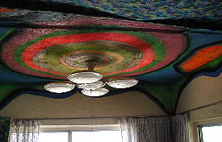 もう、この辺、完全にフンデルトワッサーの世界ッすよ。
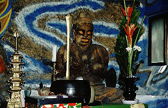 不動妙王なのだろうか。独創にして独走。
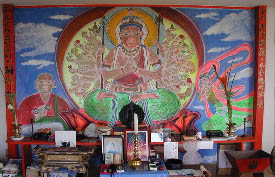 住職が1日で描いたと云う千手観音図。
2001.7.
国見山大国寺のホームページはこちら
珍寺大道場 HOME